1 ggplot2 Graphics
gg 为 grammar of graphics 的缩写。
1.1 ggplot
ggplot(data = ,mapping = aes(x,y,…))
创建一个基础图形对象gg，空白图层 + 数据集 + 美学映射。
1.1.1 aesthetics mapping
mapping=aes(x,y,z,..,color,fill,shape,size,group,linewidth,linetype,alpha,...)

1.1.1.1 color
1.1.1.2 fill
Code
library(grid)
colours <- scales::viridis_pal()(10)
patterns <- list(
linearGradient(colours, group = FALSE),
"limegreen",
radialGradient(colours, group = FALSE),
pattern(
rectGrob(x = c(0.25, 0.75), y = c(0.25, 0.75), width = 0.5, height = 0.5),
width = unit(5, "mm"), height = unit(5, "mm"), extend = "repeat",
gp = gpar(fill = "limegreen")
)
)
ggplot(mpg, aes(factor(cyl), fill = factor(cyl))) +
geom_bar() +
scale_fill_manual(values = patterns)
1.1.1.3 shape
Code
ggplot(data = df, mapping = aes(x = index, y = pch)) +
geom_point(shape = ".") #像素
Code
ggplot(data = df, aes(index, pch)) +
geom_point(aes(shape = factor(pch)), fill ="red",size = 4) +
scale_shape_manual(values = 0:25) +
labs(shape = "点形状" )
Code
shape_names <- c(
"circle", paste("circle", c("open", "filled", "cross", "plus", "small")), "bullet",
"square", paste("square", c("open", "filled", "cross", "plus", "triangle")),
"diamond", paste("diamond", c("open", "filled", "plus")),
"triangle", paste("triangle", c("open", "filled", "square")),
paste("triangle down", c("open", "filled")),
"plus", "cross", "asterisk"
)
shapes <- data.frame(
shape_names = shape_names,
x = c(1:7, 1:6, 1:3, 5, 1:3, 6, 2:3, 1:3),
y = -rep(1:6, c(7, 6, 4, 4, 2, 3))
)
ggplot(shapes, aes(x, y)) +
geom_point(aes(shape = shape_names), fill = "red", size = 5) +
geom_text(aes(label = shape_names), nudge_y = -0.3, size = 3.5) +
scale_shape_identity() +
theme_void()
1.2 Geometry
-
图形基元（Graphical primitives）:
geom_blank(): display nothing. Most useful for adjusting axes limits using data.geom_point(): points.geom_path(): paths.geom_ribbon(): ribbons, a path with vertical thickness.geom_segment(): a line segment, specified by start and end position.geom_rect(): rectangles.geom_polygon(): filled polygons.geom_text(): text.
Code
df <- data.frame(
x = c(3, 1, 5),
y = c(2, 4, 6),
label = c("a","b","c")
)
p <- ggplot(df, aes(x, y, label = label)) +
labs(x = NULL, y = NULL) + # Hide axis label
theme(plot.title = element_text(size = 12)) # Shrink plot title
(p + geom_point() + ggtitle("point") +
p + geom_text() + ggtitle("text") +
p + geom_bar(stat = "identity") + ggtitle("bar") )/
(p + geom_tile() + ggtitle("tile") +
p + geom_raster() + ggtitle("raster")+
p + geom_line() + ggtitle("line")) /
(p + geom_area() + ggtitle("area") +
p + geom_path() + ggtitle("path") +
p + geom_polygon() + ggtitle("polygon"))
-
One variable:
-
Discrete:
-
geom_bar(): display distribution of discrete variable.
-
-
Continuous:
geom_histogram(): bin and count continuous variable, display with bars.geom_density(): smoothed density estimate.geom_dotplot(): stack individual points into a dot plot.geom_freqpoly(): bin and count continuous variable, display with lines.
-
-
Two variables:
-
Both continuous:
geom_point(): scatterplot.geom_quantile(): smoothed quantile regression.geom_rug(): marginal rug plots.geom_smooth(): smoothed line of best fit.geom_text(): text labels.
-
Show distribution:
geom_bin2d(): bin into rectangles and count.geom_density2d(): smoothed 2d density estimate.geom_hex(): bin into hexagons and count.
-
At least one discrete:
geom_count(): count number of point at distinct locationsgeom_jitter(): randomly jitter overlapping points.
-
One continuous, one discrete:
geom_bar(stat = "identity"): a bar chart of precomputed summaries.geom_boxplot(): boxplots.geom_violin(): show density of values in each group.
-
One time, one continuous:
geom_area(): area plot.geom_line(): line plot.geom_step(): step plot.
-
Display uncertainty:
geom_crossbar(): vertical bar with center.geom_errorbar(): error bars.geom_linerange(): vertical line.geom_pointrange(): vertical line with center.
-
Spatial:
-
geom_map(): fast version of for map data.
-
-
-
Three variables:
geom_contour(): contours.geom_tile(): tile the plane with rectangles.geom_raster(): fast version of for equal sized tiles.
1.2.1 X=连续型变量
1.2.1.1 geom_point
Code
ggplot(data = mpg) +
geom_point(mapping = aes(x=displ,y=hwy),
stat = "identity",position = "identity")
Code
ggplot(mpg, aes(displ,hwy)) +
geom_point() |
ggplot(mpg, aes(displ,hwy)) +
geom_point(aes(size = displ/10)) +
scale_size_area(name="displ/10")
1.2.1.2 geom_line
Code
economics |> head()
#> # A tibble: 6 × 6
#> date pce pop psavert uempmed unemploy
#> <date> <dbl> <dbl> <dbl> <dbl> <dbl>
#> 1 1967-07-01 507. 198712 12.6 4.5 2944
#> 2 1967-08-01 510. 198911 12.6 4.7 2945
#> 3 1967-09-01 516. 199113 11.9 4.6 2958
#> 4 1967-10-01 512. 199311 12.9 4.9 3143
#> 5 1967-11-01 517. 199498 12.8 4.7 3066
#> 6 1967-12-01 525. 199657 11.8 4.8 3018
ggplot(economics,aes(date,pop))+
geom_line()+
scale_x_date()
1.2.1.3 geom_smooth
Code
q <- ggplot(mpg, aes(displ, hwy)) +
geom_point()
q+geom_smooth(method = "loess",span = 0.2,se=T) # loess 平滑局部回归 small n
#> `geom_smooth()` using formula = 'y ~ x'
Code
#span 0非常摆动，1不那么摆动
q+ geom_smooth(span = 1) #不很摆动
#> `geom_smooth()` using method = 'loess' and formula = 'y ~ x'Code
library(MASS)
q+geom_smooth(method = "rlm") # robust linear model 稳健线性模型
#> `geom_smooth()` using formula = 'y ~ x'
Code
library(mgcv)
q+ geom_smooth(method = "gam", formula = y ~ s(x)) # gam 广义相加模型 n>1000Code
binomial_smooth <- function(...) {
geom_smooth(method = "glm", method.args = list(family = "binomial"), ...)
}
ggplot(rpart::kyphosis,aes(Age,as.numeric(Kyphosis)-1))+
geom_point()+
binomial_smooth()
#> `geom_smooth()` using formula = 'y ~ x'1.2.1.4 geom_histogram
Code
ggplot(mpg, aes(hwy)) + geom_histogram(binwidth = 2.5)
Code
ggplot(mpg, aes(hwy)) +
geom_histogram(binwidth = 1) |
ggplot(mpg, aes(hwy)) +
geom_histogram(aes(weight = displ), binwidth = 1) # 加权
Code
ggplot(data = mpg) +
geom_histogram(aes(x=displ,y=after_stat(density)),
stat = "bin",position = "stack",
binwidth = 0.5
) +
scale_y_continuous(labels=scales::percent) +
geom_density(aes(x=displ,y=after_stat(density)),
color="red", linewidth=1)
1.2.1.5 geom_bin2d()
Code
smaller <- diamonds |>
dplyr::filter(carat < 3)
ggplot(smaller, aes(x = carat, y = price)) +
geom_bin2d()
Code
1.2.1.6 geom_freqpoly
Code
ggplot(mpg, aes(hwy)) +
geom_freqpoly(binwidth = 2.5)
1.2.1.7 geom_density
Code
p <- ggplot(data = mpg)
p + geom_density(aes(displ,fill=drv),
stat = "density",position = "identity",
alpha=0.3
)+
scale_y_continuous(labels = scales::percent)+
labs(fill="图例名")+
theme(legend.position = "top")
1.2.1.8 geom_rug
y→sides="r","l"
x→sides="b","t"

1.2.1.9 geom_jitter
Code
p + geom_jitter(mapping = aes(x=displ,y=hwy),
stat = "identity",position = "jitter")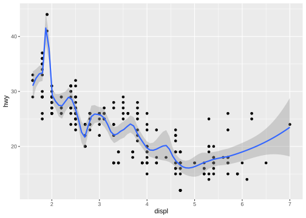
1.2.2 X=离散型变量
1.2.2.1 geom_bar
Code

Code
ggplot(data = mpg) +
geom_col(mapping = aes(x=factor(cyl),y=hwy,fill=drv),
position = "stack") |
ggplot(data = mpg) +
geom_col(mapping = aes(x=factor(cyl),y=hwy,fill=drv),
position = "fill")+
scale_y_continuous(labels = scales::label_percent())
有序条形图

1.2.2.2 geom_errorbar
geom_errorbarh
geom_linerange
geom_crossbar
geom_pointrange
Code
y <- c(18, 11, 16)
df <- data.frame(x = 1:3, y = y, se = c(1.2, 0.5, 1.0))
base <- ggplot(df, aes(x, y, ymin = y - se, ymax = y + se))
(base + geom_errorbar()|
base + geom_linerange()|
base + geom_ribbon())/
(base + geom_crossbar()|
base + geom_pointrange()|
base + geom_smooth(stat = "identity"))Code
read_csv("data/g.csv") |>
summarise(
mean=mean(liverweight),
sd=sd(liverweight),
.by=treatment
) |>
ggplot(aes(treatment,mean,fill=treatment))+
geom_bar(stat = "identity")+
geom_errorbar(aes(ymin=mean-sd,ymax=mean+sd),width=.2)
#> Rows: 20 Columns: 2
#> ── Column specification ────────────────────────────────────────────────────────
#> Delimiter: ","
#> chr (1): treatment
#> dbl (1): liverweight
#>
#> ℹ Use `spec()` to retrieve the full column specification for this data.
#> ℹ Specify the column types or set `show_col_types = FALSE` to quiet this message.1.2.2.3 geom_dotplot
Code
ggplot(mpg)+geom_dotplot(mapping = aes(x=drv,y=hwy),
position = "identity",
stackdir = "center",binaxis = 'y',# stacking along y axis
fill="red",binwidth = 0.7)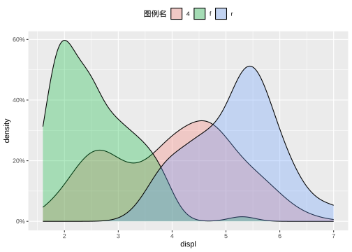
1.2.2.4 geom_boxplot
Code
ggplot(mpg) + geom_boxplot(mapping = aes(x=drv,y=hwy),
stat = "boxplot",position = "dodge",
notch=TRUE, varwidth=TRUE,
width=0.1,fill="green"
)+
geom_violin(aes(x=drv,y=hwy),alpha=0.2)
1.2.2.5 geom_violin
Code
ggplot(mpg) + geom_violin(mapping = aes(x=drv,y=hwy),
stat = "ydensity",position = "dodge")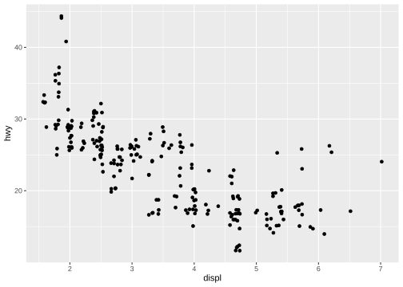
1.2.2.6 geom_tile
Code
# 设置随机数种子以确保结果的可重复性
set.seed(10)
# 生成随机数据集
mydata <- tibble(
year = 2000:2024,
lung = runif(25),
liver = runif(25),
bone = runif(25),
luk = runif(25),
eso = runif(25),
gas = runif(25),
eye = runif(25),
brain = runif(25),
pan = runif(25),
kidney = runif(25),
breast= runif(25),
) |> pivot_longer(cols = -1,
names_to = "cancer",
values_to = "morbidity")
ggplot(mydata, aes(year, cancer)) +
geom_tile(aes(fill =morbidity)) +
scale_fill_gradient(low = "white", high = "red")
1.3 统计变换 statistical transformations
stat_bin()：geom_bar()，geom_freqpoly()，geom_histogram()
Code
mtcars %>%
ggplot(aes(x =cyl , y= mpg))+
stat_summary(geom = "bar",fun = mean)
stat_bin2d()：geom_bin2d()
stat_bindot()：geom_dotplot()
stat_binhex()：geom_hex()
stat_boxplot()：geom_boxplot()
stat_contour()：geom_contour()
stat_quantile()：geom_quantile()
stat_smooth()：geom_smooth()
stat_sum()：geom_count()
stat_ecdf()：计算经验累积分布图。
stat_function()：根据 x 值的函数计算 y 值。
stat_summary()：将 Y 值汇总到不同的 X 值。
stat_summary2d() ：汇总分箱值。
stat_summary_hex()
stat_qq()：对分位数-分位数图执行计算。
stat_spoke()：将角度和半径转换为位置。
stat_unique()：删除重复的行。
Code
ggplot(diamonds) +
stat_summary(
aes(x = cut, y = depth),
geom = "errorbar",
fun.min = min,
fun.max = max,
fun = mean
)Code
ggplot(mpg, aes(trans, cty)) +
geom_point() +
stat_summary(geom = "point", fun = "mean", colour = "red", size = 4)1.4 位置调整 position adjustments
1.4.0.1 条偏移
Code

Code

1.4.0.2 点偏移
position_nudge()：按固定偏移量移动点。
position_jitter()：为每个位置添加一点随机噪音。
position_jitterdodge()：躲避组内的点，然后添加一点随机噪音。
Code
ggplot(mpg, aes(x = factor(cyl), y = hwy)) +
geom_point(position = "identity") |
ggplot(mpg, aes(x = factor(cyl), y = hwy)) +
geom_point(position = "jitter")
Code
ggplot(mpg, aes(x = factor(cyl), y = hwy)) +
geom_point(position =position_nudge(x=0.1,y=0))|
ggplot(mpg, aes(x = factor(cyl), y = hwy,color=factor(cyl))) +
geom_point(position = position_jitterdodge())1.5 坐标系 coordinate
默认坐标系是笛卡尔坐标系


1.6 坐标轴 axis
1.6.1 变换
Code
ggplot(mpg, aes(log10(cty),hwy)) +
geom_point()+
scale_x_log10()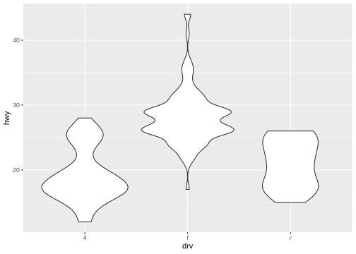
1.6.2 limits
Code
ggplot(mpg, aes(displ, hwy)) +
geom_point(na.rm = TRUE) |
ggplot(mpg, aes(displ, hwy)) +
geom_point(na.rm = TRUE) +
xlim(5, 6) +
ylim(10, 25)Code
ggplot(mpg, aes(drv, hwy)) +
geom_jitter(width = 0.25, na.rm = TRUE) +
xlim("f", "r") +
ylim(25, NA)
Code
# filter
mpg |>
dplyr::filter(displ >= 5 & displ <= 6 & hwy >= 10 & hwy <= 25) |>
ggplot(aes(x = displ, y = hwy)) +
geom_point(aes(color = drv)) +
geom_smooth(na.rm=TRUE)|
# limits
ggplot(mpg, aes(x = displ, y = hwy)) +
geom_point(aes(color = drv)) +
geom_smooth(na.rm=TRUE) +
scale_x_continuous(limits = c(5, 6)) + #取子集
scale_y_continuous(limits = c(10, 25))
#> `geom_smooth()` using method = 'loess' and formula = 'y ~ x'
#> `geom_smooth()` using method = 'loess' and formula = 'y ~ x'
#> Warning: Removed 202 rows containing missing values or values outside the scale range
#> (`geom_point()`).
1.6.3 zooming
调整绘制的数据,在每个刻度中设置coord_cartesian(xlim= ,ylim= )
Code
ggplot(mpg, aes(x = displ, y = hwy)) +
geom_point(aes(color = drv)) +
geom_smooth() |
ggplot(mpg, aes(x = displ, y = hwy)) +
geom_point(aes(color = drv)) +
geom_smooth()+
coord_cartesian(xlim = c(5, 6), ylim = c(10, 25)) #放大局部
#> `geom_smooth()` using method = 'loess' and formula = 'y ~ x'
#> `geom_smooth()` using method = 'loess' and formula = 'y ~ x'
1.6.4 共享
shared 坐标轴相同
Code
x_scale <- scale_x_continuous(limits = range(mpg$displ))
y_scale <- scale_y_continuous(limits = range(mpg$hwy))
col_scale <- scale_color_discrete(limits = unique(mpg$drv))
ggplot(mpg[mpg$class=="suv",], aes(x = displ, y = hwy, color = drv)) +
geom_point() +
x_scale +
y_scale +
col_scale|
ggplot(mpg[mpg$class=="compact",], aes(x = displ, y = hwy, color = drv)) +
geom_point() +
x_scale +
y_scale +
col_scale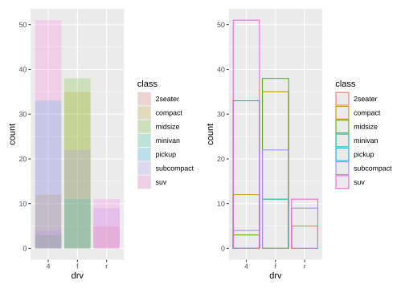
1.7 标题 labels
Code

Code
ggplot(mpg, aes(x = displ, y = hwy)) +
geom_point(aes(color = class)) +
geom_smooth(se = FALSE) +
labs(
x = "Engine displacement (L)",
y = "Highway fuel economy (mpg)",
color = "Car type", # 图例 美学映射color
title = "Fuel efficiency generally decreases with engine size",
subtitle = "Two seaters (sports cars) are an
exception because of their light weight",
caption = "Data from fueleconomy.gov"
)
#> `geom_smooth()` using method = 'loess' and formula = 'y ~ x'
1.8 注释 annotation
1.8.1 文本 text
Code

Code

Code
Code
# 自定义
df <- data.frame(
treatment = c("a", "b", "c"),
response = c(1.2, 3.4, 2.5)
)
ggplot(df, aes(treatment, response)) +
geom_point() +
geom_text(
mapping = aes(label = paste0("(", response, ")")),
nudge_x = -0.3,
nudge_y=.2
) 
Code
mtcars |>
group_by(cyl,am) |>
summarise(n=n()) |>
mutate(pct = n / sum(n),
lbls = scales::percent(pct)
)|>
ggplot(aes(factor(cyl),pct,fill=factor(am)))+
geom_bar(stat = "identity",position = "fill")+
geom_text(mapping = aes(label=lbls),
position = position_stack(vjust = 0.5),
size=3
)
#> `summarise()` has grouped output by 'cyl'. You can override using the `.groups`
#> argument.
Code
label_info <- mpg |>
group_by(drv) |>
arrange(desc(displ)) |>
slice_head(n = 1)|>
mutate(
drive_type = case_when( # vectorise multiple if_else () statements
drv == "f" ~ "front-wheel drive",
drv == "r" ~ "rear-wheel drive",
drv == "4" ~ "4-wheel drive")
)|>
dplyr::select(displ, hwy, drv, drive_type)
p <-ggplot(mpg, aes(x = displ, y = hwy, color = drv)) +
geom_point(alpha = 0.3) +
geom_smooth(method="lm",formula="y~x",se = FALSE) +
theme(legend.position = "none")
p+ geom_text(#添加注释 geom_label 标签加背景框
data = label_info,
aes(x = displ, y = hwy, label = drive_type),#label映射
fontface = "bold", size = 5, nudge_y = 2
)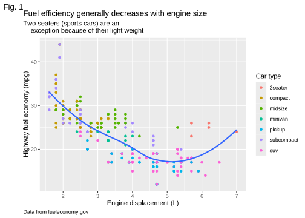
Code
p + ggrepel::geom_label_repel(
data = label_info,
aes(x = displ, y = hwy, label = drive_type),
fontface = "bold", size = 5, nudge_y = 2
) 
Code
potential_outliers <- mpg |>
dplyr::filter(hwy > 40 | (hwy > 20 & displ > 5))
ggplot(mpg, aes(x = displ, y = hwy)) +
geom_point() +
ggrepel::geom_text_repel(data = potential_outliers, aes(label = model)) +
geom_point(data = potential_outliers, color = "red") +
geom_point(
data = potential_outliers,
color = "red", size = 3, shape = "circle open"
)1.8.2 markdown
Code
df <- data.frame(x = 1:3, y = 1:3)
base <- ggplot(df, aes(x, y)) +
geom_point() +
labs(x = "Axis title with *italics* and **boldface**")
base |
base + theme(axis.title.x = ggtext::element_markdown()) #ggtext::element_markdown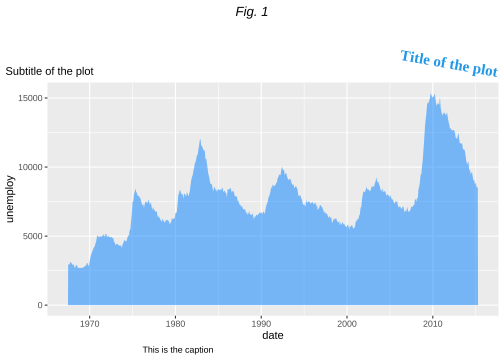
1.8.3 数学表达式
Code

Code

1.8.4 线段 直线 箭头
geom_hline()
geom_vline()
geom_abline
geom_segment() arrow
Code
trend_text <- "Larger engine sizes tend to have lower fuel economy." |>
str_wrap(width = 30)
trend_text
#> [1] "Larger engine sizes tend to\nhave lower fuel economy."
ggplot(mpg, aes(x = displ, y = hwy)) +
geom_point() +
annotate(
geom = "label", x = 3.5, y = 38,
label = trend_text,
hjust = "left", color = "red"
) +
annotate(
geom = "segment",
x = 3, y = 35, xend = 5, yend = 25, color = "red",
arrow = arrow(type = "closed")
)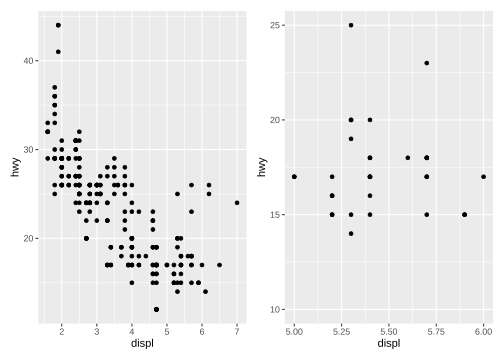
Code
p <- ggplot(mpg, aes(displ, hwy)) +
geom_point(
data = dplyr::filter(mpg, manufacturer == "subaru"),
colour = "orange",
size = 3
) +
geom_point()
p|p +
annotate(geom = "point", x = 5.5, y = 40, colour = "orange", size = 3) +
annotate(geom = "point", x = 5.5, y = 40) +
annotate(geom = "text", x = 5.6, y = 40, label = "subaru", hjust = "left")|
p +
annotate(
geom = "curve", x = 4, y = 35, xend = 2.65, yend = 27,
curvature = .3, arrow = arrow(length = unit(2, "mm"))
) +
annotate(geom = "text", x = 4.1, y = 35, label = "subaru", hjust = "left")
1.9 scale
1.9.1 x/y_continuous
Code
ggplot(mtcars, aes(x = wt, y = mpg)) +
geom_point() +
scale_x_continuous(name = "Weight (1000 lbs.)",
n.breaks = 10,
minor_breaks = NULL,
limits = c(1.5, 5.5)) +
scale_y_continuous(name = "Miles per gallon",
breaks = seq(10, 35, 5),
minor_breaks = seq(10, 35, 1),
limits = c(10, 35)) +
labs(title = "Fuel efficiency by car weight")
Code
ggplot(diamonds, aes(x = price, y = cut)) +
geom_boxplot(alpha = 0.05) +
scale_x_continuous(labels = scales::label_dollar(scale = 1/1000, suffix = "K"))
Code
ggplot(diamonds, aes(x = cut, fill = clarity)) +
geom_bar(position = "fill") +
scale_y_continuous(name = "Percentage", labels = scales::label_percent())1.9.2 x/y_discrete

1.9.3 color
Code
RColorBrewer::display.brewer.all()Code
p <- ggplot(mpg, aes(x=displ, y=hwy, color=drv)) +
geom_point(shape=19, size=3)
p + ggthemes::scale_color_colorblind()
Code
p <- ggplot(mpg, aes(x=displ, y=hwy, color=cty)) +
geom_point()
p + ggtitle("A. Default color gradient")|
p + scale_color_gradient(low="grey", high="black") +
ggtitle("B. Greyscale gradient")|
p + scale_color_gradient(low="red", high="blue") +
ggtitle("C. Red-blue color gradient")
Code
p + scale_color_steps(low="red", high="blue") +
ggtitle("D. Red-blue binned color Gradient")|
p + scale_color_steps2(low="red", mid="white", high="blue",
midpoint=median(mtcars$disp)) +
ggtitle("E. Red-white-blue binned gradient")|
p + scale_color_viridis_c(direction = -1) + # viridis_c,d,b
ggtitle("F. Viridis color gradient")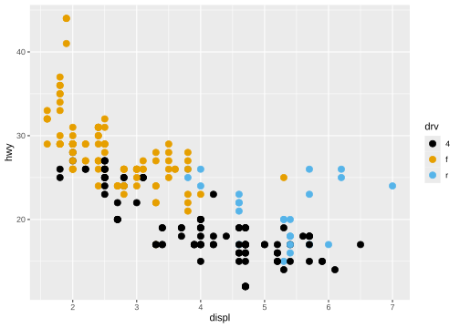
Code
df <- tibble(
x = rnorm(10000),
y = rnorm(10000)
)
ggplot(df, aes(x, y)) +
geom_hex() +
coord_fixed() +
labs(title = "Default, continuous", x = NULL, y = NULL)
#> Warning: Computation failed in `stat_binhex()`.
#> Caused by error in `compute_group()`:
#> ! The package "hexbin" is required for `stat_bin_hex()`.
Code
ggplot(df, aes(x, y)) +
geom_hex() +
coord_fixed() +
scale_fill_viridis_c() +
labs(title = "Viridis, continuous", x = NULL, y = NULL)
#> Warning: Computation failed in `stat_binhex()`.
#> Caused by error in `compute_group()`:
#> ! The package "hexbin" is required for `stat_bin_hex()`.Code
ggplot(df, aes(x, y)) +
geom_hex() +
coord_fixed() +
scale_fill_viridis_b() +
labs(title = "Viridis, binned", x = NULL, y = NULL)
#> Warning: Computation failed in `stat_binhex()`.
#> Caused by error in `compute_group()`:
#> ! The package "hexbin" is required for `stat_bin_hex()`.
1.9.4 fill
Code

Code
p + scale_fill_viridis_d() +
ggtitle("C. Viridis color scheme")|
p + scale_fill_manual(values=c("gold4", "orange2", "deepskyblue3", "blue4",
"brown2", "yellowgreen","lightpink")) +
ggtitle("D. Manual color selection")1.10 分面
Code
q <- ggplot(mpg,aes(x=displ))+
geom_histogram(fill="lightblue")
# 一个分类变量
q + facet_wrap(~drv,nrow = 3)
#> `stat_bin()` using `bins = 30`. Pick better value with `binwidth`.
Code
q + facet_wrap(~drv,ncol = 3) #
#> `stat_bin()` using `bins = 30`. Pick better value with `binwidth`.
Code
# 多个分类变量
q + facet_grid(drv~class)
#> `stat_bin()` using `bins = 30`. Pick better value with `binwidth`.
Code
q + facet_grid(drv~.)
#> `stat_bin()` using `bins = 30`. Pick better value with `binwidth`.
Code
q + facet_grid(.~drv) #
#> `stat_bin()` using `bins = 30`. Pick better value with `binwidth`.
Code
ggplot(mpg, aes(x = displ, y = hwy)) +
geom_point() +
facet_grid(drv ~ cyl) |
ggplot(mpg, aes(x = displ, y = hwy)) +
geom_point() +
facet_grid(drv ~ cyl, scales = "free_y")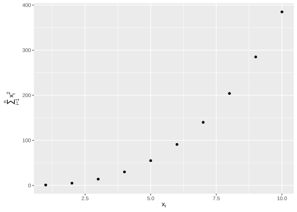
1.11 主题
1.11.1 内置主题
Code

Code
p + theme_minimal() + labs(title = "theme_minimal")|
p + theme_classic() + labs(title = "theme_classic")1.11.2 字体
Code
findfont <- function(x){
suppressMessages(require(showtext))
suppressMessages(require(dplyr))
dplyr::filter(font_files(), grepl(x, family, ignore.case=TRUE)) |>
dplyr::select(path, file, family, face)
}
findfont("comic")
#> path file family face
#> 1 C:/Windows/Fonts comic.ttf Comic Sans MS Regular
#> 2 C:/Windows/Fonts comicbd.ttf Comic Sans MS Bold
#> 3 C:/Windows/Fonts comici.ttf Comic Sans MS Italic
#> 4 C:/Windows/Fonts comicz.ttf Comic Sans MS Bold Italic
font_add(family = "Times New Roman", regular = "C:\\Windows\\Fonts\\Times New Roman\\times.ttf",
bold = "C:\\Windows\\Fonts\\Times New Roman\\timesbd.ttf",
italic = "C:\\Windows\\Fonts\\Times New Roman\\timesi.ttf",
bolditalic = "C:\\Windows\\Fonts\\Times New Roman\\timesbi.ttf")
findfont("Times New Roman")
#> path file family face
#> 1 C:/Windows/Fonts times.ttf Times New Roman Regular
#> 2 C:/Windows/Fonts timesbd.ttf Times New Roman Bold
#> 3 C:/Windows/Fonts timesbi.ttf Times New Roman Bold Italic
#> 4 C:/Windows/Fonts timesi.ttf Times New Roman Italic
font_families()
#> [1] "sans" "serif"
#> [3] "mono" "wqy-microhei"
#> [5] "Times New Roman Regular" "Times New Roman Bold"
#> [7] "Times New Roman Bold Italic" "Times New Roman Italic"
#> [9] "黑体 常规" "楷体 常规"
#> [11] "Times New Roman"1.11.3 自定义主题
Code
mytheme <- theme(plot.title=element_text(face="bold.italic", size="14", color="brown"),
axis.title=element_text(face="bold.italic", size=10, color="brown"),
axis.text=element_text(face="bold", size=9, color="darkblue"),
panel.background=element_rect(fill="white", color="darkblue"),
panel.grid.major.y=element_line(color="grey", linetype=1),
panel.grid.minor.y=element_line(color="grey", linetype=2),
panel.grid.minor.x=element_blank(), legend.position="top")
ggplot(mpg, aes(x=drv, y=hwy, fill=drv)) +
geom_boxplot() +
mytheme 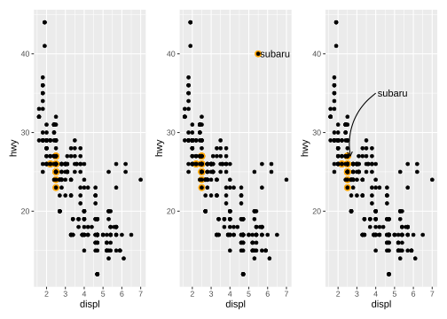
1.11.4 图例
Code
# 位置和布局
base <- ggplot(mpg, aes(x = displ, y = hwy)) +
geom_point(aes(color = class))
base + theme(legend.position = "right") # the default
Code
base + theme(legend.position = "left")
Code
base +
theme(legend.position = "top") +
guides(color = guide_legend(nrow = 3))Code
base +
theme(legend.position = "bottom") +
guides(color = guide_legend(nrow = 2, override.aes = list(size = 4)))
Code
# 文本
ggplot(mtcars, aes(wt, mpg, color = factor(cyl))) +
geom_point(size=3) +
scale_color_discrete(name="Cylinders") +
labs(title = "Fuel Efficiency for 32 Automobiles",
x = "Weight (1000 lbs)",
y = "Miles per gallon") +
theme(legend.position = c(.95, .95),
legend.justification = c(1, 1),
legend.background = element_rect(fill = "lightgrey",
color = "white",
linewidth = 1),
legend.key = element_blank(),
legend.direction = "horizontal")
#> Warning: A numeric `legend.position` argument in `theme()` was deprecated in ggplot2
#> 3.5.0.
#> ℹ Please use the `legend.position.inside` argument of `theme()` instead.
Code
ggplot(mpg, aes(x = displ, y = hwy, color = drv)) +
geom_point() +
labs(
title = "Larger engine sizes tend to have lower fuel economy",
caption = "Source: https://fueleconomy.gov."
) +
theme(
legend.position = c(0.8, 0.9),
legend.direction = "horizontal",
legend.box.background = element_rect(color = "blue"),
plot.title = element_text(face = "bold",hjust = 0.5),
plot.title.position = "plot",
plot.caption.position = "plot",
plot.caption = element_text(hjust = 1)
)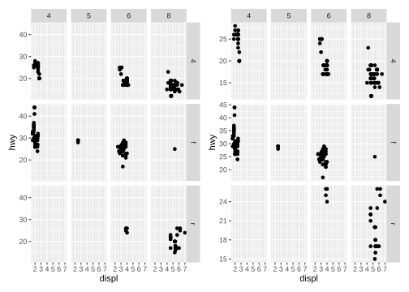
1.11.5 绘图区
Code
mtcars$am <- factor(mtcars$am, labels = c("Automatic", "Manual"))
ggplot(data=mtcars, aes(x = disp, y = mpg)) +
geom_point(aes(color=factor(cyl)), size=2) +
geom_smooth(method="lm", formula = y ~ x + I(x^2),
linetype="dotted", se=FALSE) +
scale_color_discrete("Number of cylinders") +
facet_wrap(~am, ncol=2) +
labs(title = "Mileage, transmission type, and number of cylinders",
x = "Engine displacement (cu. in.)",
y = "Miles per gallon") +
theme_bw() +
theme(strip.background = element_rect(fill = "white"),
panel.grid.major = element_line(color="lightgrey"),
panel.grid.minor = element_line(color="lightgrey",
linetype="dashed"),
axis.ticks = element_blank(),
legend.position = "bottom",
legend.key = element_blank())
Code
library(grid)
gray_gradient <- linearGradient(scales::pal_grey()(10))
ggplot(mpg, aes(displ, hwy)) +
geom_point() +
theme(panel.background = element_rect(fill = gray_gradient))